Building your own boat is rewarding, fun and easy - Click Here for an overview.
Order Plans and Kits
Feel free to ask questions: GentryCustomBoats@yahoo.com
Click here to see What's New
New! Racer X
An ocean racing scull
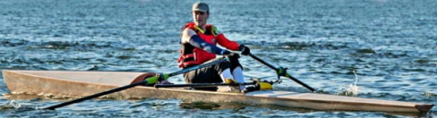New! The Shenandoah Peapod
Classic double ended pulling boat
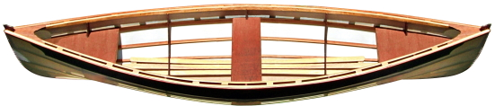New! The Great Wicomico
A big capable canoe for everyone
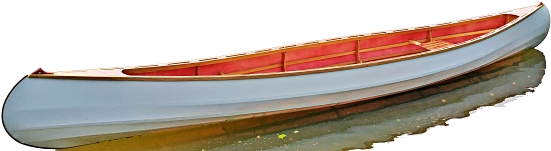New! The Indian Creek motor canoe
A canoe of many uses
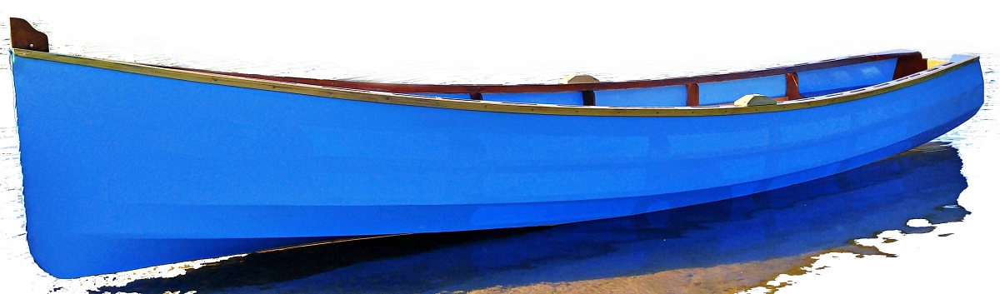Velocé
A racing scull for amateur builders!!
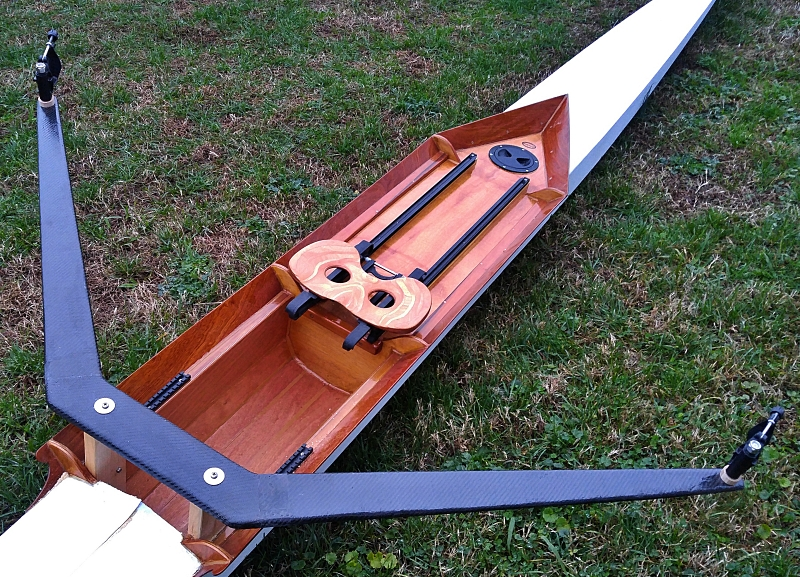The Big Aloha
a stand-up-paddleboard for the rest of us
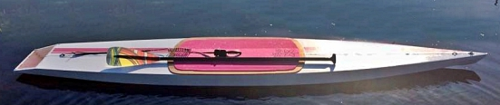Chautauqua
A traditional decked sailing canoe in the spirit of the nineteenth century

The Aloha stand up paddleboard
Lightweight and ridiculously easy to build
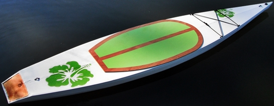The Chuckanut 17
Bigger, faster, stronger - with a sail rig!
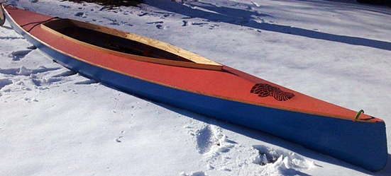The Light Melonseed
Small boat sailing at its best
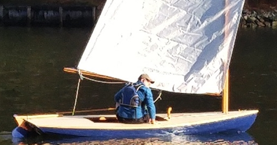The Wee Lassie
A classic solo canoe
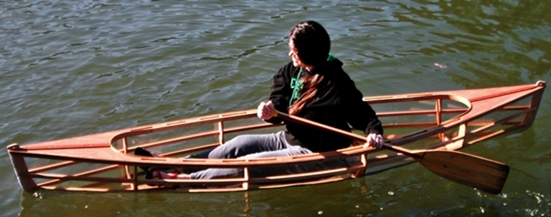The Mobjack Bay
A low volume sea kayak for lighter paddlers

Chamberlain Gunning Dory
A classic skin-on-frame rowboat
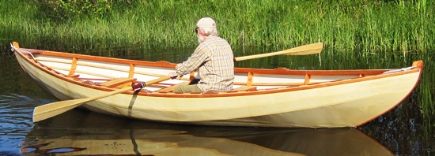The Annabelle Skiff
A superb SOF sailing dinghy

The Piankatank River Pram
An ultralight tender that rows, sails and tows
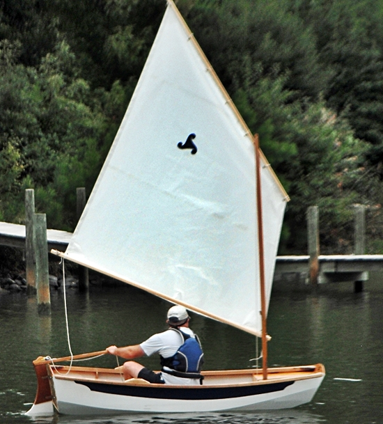Lanui SUP
An easy to build Stand-Up-Paddleboard

Shenandoah Whitehall
14' Family Rowing Boat
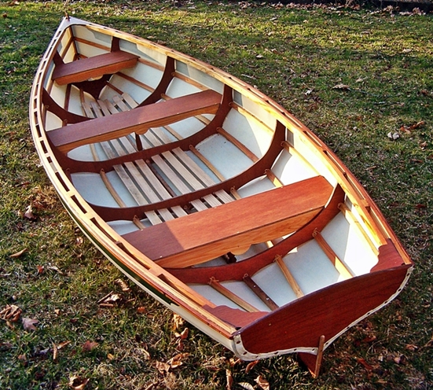RUTH
Unique 18' 45lb high performance rowing wherry
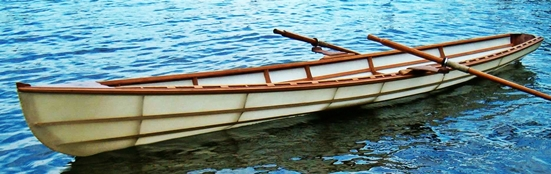Chuckanut 15 Tandem
The perfect family boat - a stable, 15' solo or double kayak
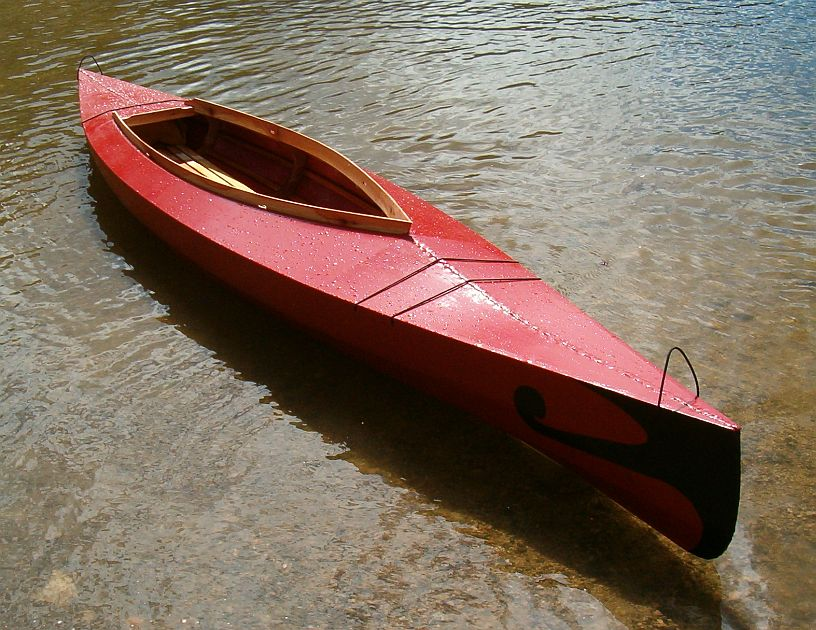Chuckanut 10, 12 and 12s Kayaks
Stable and comfortable recreational style kayaks
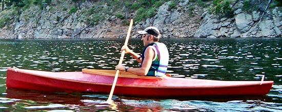Disko Bay Qajaq
17' West Greenland sea kayak
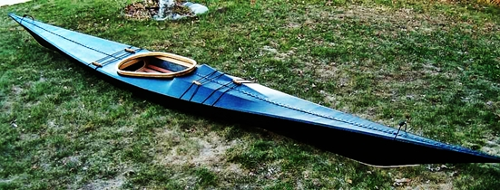Baffin Bay
A traditional Greenland sea kayak

The Rushton IGO
A classic 16' solo or tandem canoe
Plans cover both traditional and non-traditional construction!

The PH13 solo canoe
A SOF double paddle canoe for relaxed use

Splinter
A fun and easy outrigger sailing canoe

Kidyak
A quick and easy to build kid's kayak

Boardyak
Sit-on-top kayaking and stand-up-paddling
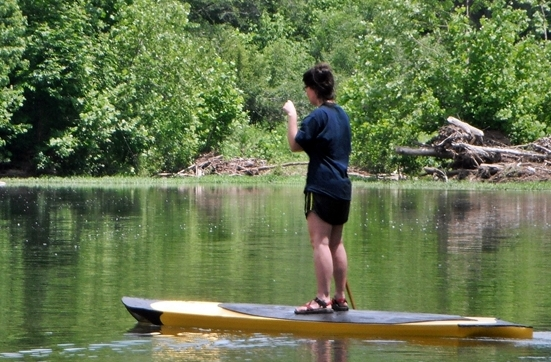